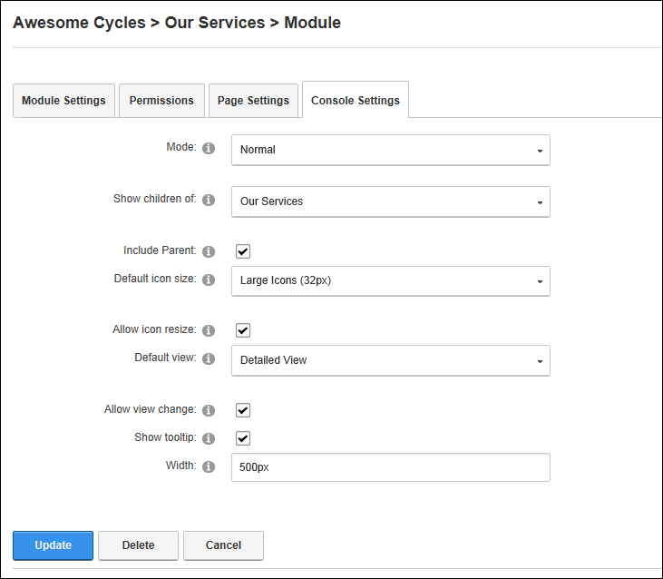
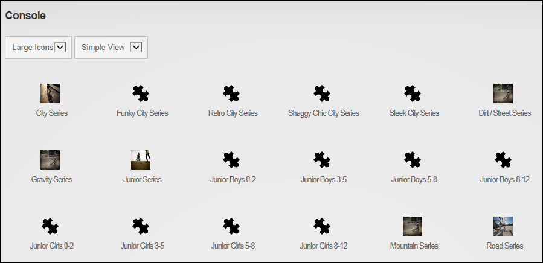

Displaying Child Pages using the Console
How to configure the Console module to display a list of linked child pages for the selected parent page. The listing of each child page is created based on the page settings.
-
- Select the Console Settings tab.
- At Mode, select Normal.
- At Show Children Of, select from these options:
- Leave this field blank to display all child pages for the current page. This is the default setting.
- Select a page display all child pages for that page.
- At Include Parent, to include the parent page selected in the previous step at the top of the pages list - OR - to only include the child pages of the selected page in the list.
- At Default Icon Size, select from the following:
- Small Icons (16 px): Select to display a 16 pixel icons. The icon used will either be the default icon provided with the Console module or the "Icon" image set for the page. See "Advanced Settings for New Pages" or See "Advanced Settings for Existing Pages". This is the default setting.
- Large Icons (32 px): Select to display a 32 pixel icons. The icon used will either be the default icon provided with the Console module or the "Large Icon" image set for the page. See "Advanced Settings for New Pages" or See "Advanced Settings for Existing Pages"
- No Icons: Select if you don't want to display an icon on the pages list. Skip the next step.
- At Allow Icon Resize, mark
 the check box to displays a drop down list at the top of the module that allows users to hide, display or change the size of the icon. This is the default setting. - OR - Unmark
the check box to displays a drop down list at the top of the module that allows users to hide, display or change the size of the icon. This is the default setting. - OR - Unmark  the check box to remove the icon resize option and only display the icon selected or no icon, as selected in the previous step.
the check box to remove the icon resize option and only display the icon selected or no icon, as selected in the previous step.
- At Default View, select from these options:
- Simple View: Select to display an icon and the page name for each item. This is the default setting.
- Detailed View: Select to display an icon, the page name and the page description for each item.
- At Allow View Change, mark the check box to display a drop down list at the top of the module that allows users to switch between simple and detailed views. This is the default setting. - OR - Unmark the check box to only display the default view.
- At Show Tooltip, select from these options:
- Mark the check box to display the page description as a tool tip when a user hovers over the page name in Simple View. This is the default setting.
- Unmark the check box to hide the tool tip and hide the page description in Simple View.
- At Order Items By Hierarchy, select from these options:
- Mark the check box to display the pages that don't have child pages in alphabetical order at the beginning of the list, followed by pages that do have child pages at the end of the list. E.g. If there are four parent pages (Pages A, B, C and D) and only Pages A and D have child pages, then the Console would display pages in this order: Page B, Page C, Page A, Page A1, Page A2, Page D, Page D1, Page D2.
- Unmark the check box to display pages in alphabetical order regardless of whether pages have children. E.g. If there are four parent pages (Pages A, B, C and D) and only Pages A and D have child pages, then the Console would display pages in this order: Page A, Page A1, Page A2, Page B, Page C, Page D, Page D1, Page D2.
- In the Width text box, select from these options:
- Enter a pixel width to set the width of this module. For example, enter 400px to display 2 columns of icons in the content pane.
- Leave this field blank to allow the icons to expand horizontally. This is the default setting.

-
Click the Update button.
Tip: If an icon has not been set on a page then the default icons called "icon_unknown_32px.gif" for the large icon and "icon_unknown_16px.gif" for the small icon will be displayed. An example of this is seen on the parent page "Our Services" in the below image.

The Console module set to display both the parent and child pages with "Order Items By Hierarchy" disabled

The Console module set to display both the parent and child pages with "Order Items By Hierarchy" enabled